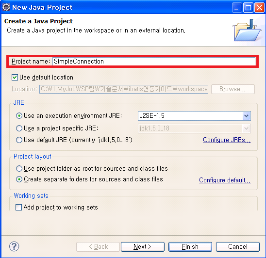
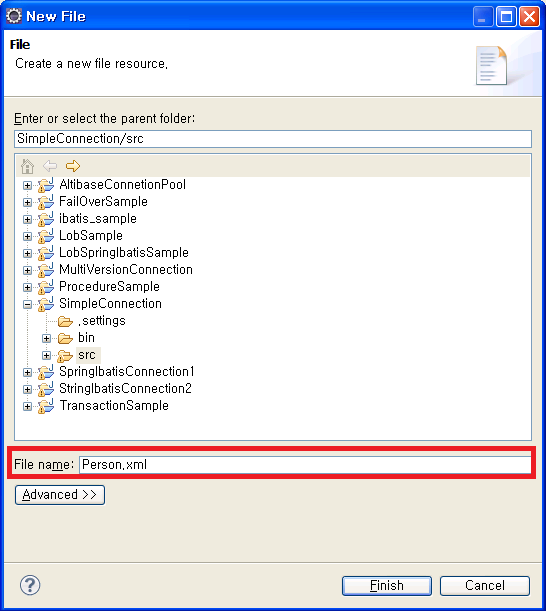
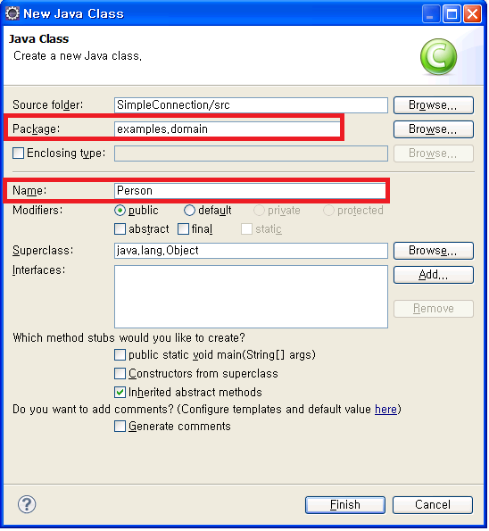
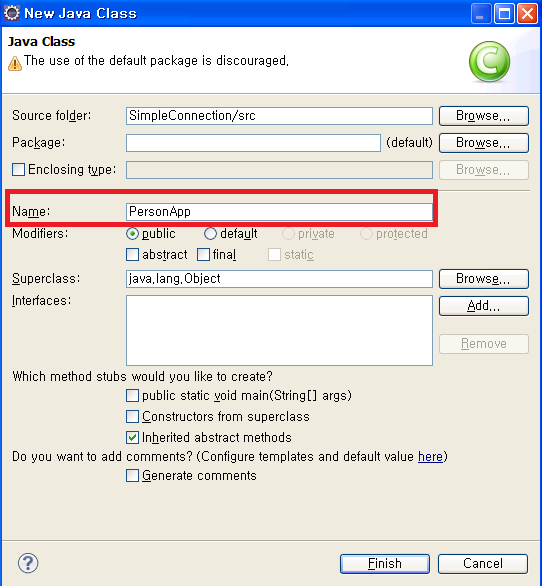
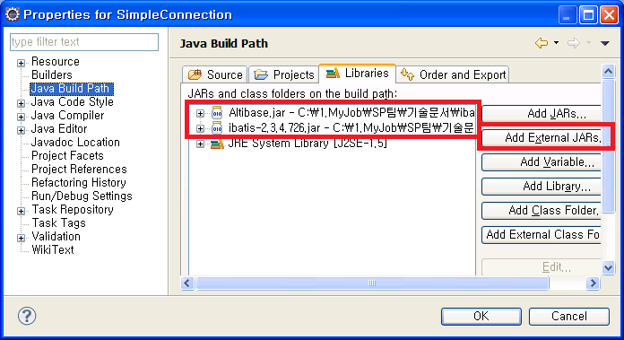
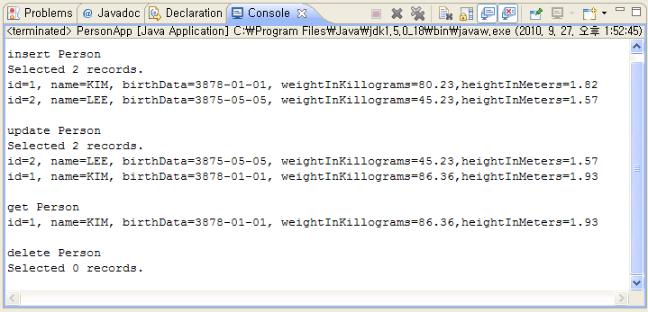

sampleConnection 예제를 바탕으로 iBATIS에서 ALTIBASE와 연동하는 방법에 대해 좀 더 자세하게 설명한다.
단, IDE는 Eclipse를 사용한다.
DB 테이블 및 시퀀스 생성
DB에 다음의 테이블과 시퀀스를 생성한다. (create_tbl.sql 파일 참고)
CREATE TABLE PERSON( PER_ID NUMBER (5, 0) NOT NULL, PER_NAME VARCHAR (40) NOT NULL, PER_BIRTH_DATE DATE, PER_WEIGHT_KG NUMBER (4, 2) NOT NULL, PER_HEIGHT_M NUMBER (4, 2) NOT NULL, PRIMARY KEY (PER_ID) ); CREATE SEQUENCE PERSON_SEQ;
프로젝트 생성
Eclipse에서 SimpleConnection 이라는 프로젝트를 생성한다.
1. 메뉴 – File – Java Project 클릭
2. Project name : 에 SimpleConnection 입력
3. Finish 버튼을 클릭

SqlMap 파일 작성
Person 테이블의 CRUD SQL 구문과 mapping되는 메소드들을 정의한 SqlMap 파일을 작성한다.(Person.xml)
1. SimpleConnection 프로젝트 – src 디렉토리에서 마우스 오른쪽 버튼 클릭하여 New – File을 클릭한다.
2. File name: 에 Person.xml을 작성한다.

다음의 내용을 Person.xml 파일에 작성한다.
<?xml version="1.0" encoding="UTF-8"?>
<!DOCTYPE sqlMap PUBLIC "-//iBATIS.com//DTD SQL Map 2.0//EN"
"http://www.ibatis.com/dtd/sql-mapconfig-2.dtd">
<sqlMap namespace="Person">
<resultMap id="PersonResult" class="examples.domain.Person">
<result property="id" column="per_id" />
<result property="name" column="per_name" />
<result property="birthDate" column="per_birth_date" />
<result property="weightInKilograms" column="per_weight_kg" />
<result property="heightInMeters" column="per_height_m" />
</resultMap>
<select id="getPerson" parameterClass="int" resultClass="examples.domain.Person">
<![CDATA[
SELECT
PER_ID as id,
PER_NAME as name,
PER_BIRTH_DATE as birthDate,
PER_WEIGHT_KG as weightInKilograms,
PER_HEIGHT_M as heightInMeters
FROM PERSON
WHERE PER_ID = #value#
]]>
</select>
<insert id="insertPerson" parameterClass="examples.domain.Person">
<![CDATA[
INSERT INTO
PERSON (PER_ID, PER_NAME, PER_BIRTH_DATE,
PER_WEIGHT_KG, PER_HEIGHT_M)
VALUES (#id#, #name#, #birthDate#,
#weightInKilograms#, #heightInMeters#)
]]>
</insert>
<update id="updatePerson" parameterClass="examples.domain.Person">
<![CDATA[
UPDATE PERSON
SET PER_NAME = #name#,
PER_BIRTH_DATE = #birthDate#,
PER_WEIGHT_KG = #weightInKilograms#,
PER_HEIGHT_M = #heightInMeters#
WHERE PER_ID = #id#
]]>
</update>
<delete id="deletePerson" parameterClass="int">
<![CDATA[
DELETE PERSON
WHERE PER_ID = #id#
]]>
</delete>
<select id="getAllPersons" resultMap="PersonResult">
<![CDATA[
SELECT * FROM person
]]>
</select>
</sqlMap>
Application에서 SqlMapClient의 insert, update, delete, queryForXXX()메소드를 호출할 때 위의 파일에 정의되어 있는 <insert>, <update>, <delete>, <select> 태그에 정의되어 있는 id와 일치하는 SQL 문들이 자동으로 수행이 된다.
SqlMapConfig 파일 작성
1. ALTIBASE 연결을 위한 property들을 정의한 properties 파일(db.properties)을 작성한다. ( SimpleConnection 프로젝트 – src 디렉토리에서 마우스 오른쪽 버튼 클릭하여 New – File을 클릭한다. File name: 에 db.properties을 작성한다.)
driver=Altibase.jdbc.driver.AltibaseDriver url=jdbc:Altibase://192.168.1.35:21129/mydb username=sys password=manager
2. SqlMapConfig 파일(SqlMapConfigExample.xml)에 ALTIBASE와 연동을 위한 dataSource와 SqlMap 파일을 설정한다. ( SimpleConnection 프로젝트 – src 디렉토리에서 마우스 오른쪽 버튼 클릭하여 New – File을 클릭한다. File name: 에 SqlMapConfigExample.xml을 작성한다.)
<?xml version="1.0" encoding="UTF-8"?>
<!DOCTYPE sqlMapConfig PUBLIC "-//iBATIS.com//DTD SQL Map Config 2.0//EN"
"http://www.ibatis.com/dtd/sql-map-config-2.dtd">
<sqlMapConfig>
<properties resource="db.properties" />
<transactionManager type="JDBC" >
<dataSource type="SIMPLE">
<property name="JDBC.Driver" value="${driver}"/>
<property name="JDBC.ConnectionURL" value="${url}"/>
<property name="JDBC.Username" value="${username}"/>
<property name="JDBC.Password" value="${password}"/>
</dataSource>
</transactionManager>
<sqlMap resource="Person.xml" />
</sqlMapConfig>
Application 작성
1. person 테이블에 대한 DO객체인 Person 클래스(Person.java)를 작성한다.
1-1. SimpleConnection 프로젝트의 src 디렉토리에서 마우스 오른쪽 버튼 클릭하여 New – Class를 클릭한다.
1-2. Package: 에 examples.domain를 입력하고 Name: 에 Person를 입력한다

다음의 내용을 Person.java 파일에 작성한다.
package examples.domain;
import java.sql.*;
public class Person {
private int id;
private String name;
private Date birthDate;
private double weightInKilograms;
private double heightInMeters;
public int getId () {
return id;
}
public void setId (int id) {
this.id = id;
}
public void setName(String name) {
this.name = name;
}
public String getName() {
return name;
}
public void setBirthDate(Date birthDate) {
this.birthDate = birthDate;
}
public Date getBirthDate() {
return birthDate;
}
public void setWeightInKilograms(double weightInKilograms) {
this.weightInKilograms = weightInKilograms;
}
public double getWeightInKilograms() {
return weightInKilograms;
}
public void setHeightInMeters(double heightInMeters) {
this.heightInMeters = heightInMeters;
}
public double getHeightInMeters() {
return heightInMeters;
}
public String toString(){
return "id="+id+", name="+name+", birthData="+birthDate+",
weightInKillograms="+weightInKilograms+
",heightInMeters="+heightInMeters;
}
}
2. DB에 CRUD를 실행하는 main 프로그램(PersonApp.java)을 작성한다.
2-1. SimpleConnection 프로젝트의 src 디렉토리에서 마우스 오른쪽 버튼 클릭하여 New – Class를 클릭한다.
2-2. Name: 에 PersonApp를 입력한다.

다음의 내용을 PersonApp.java 파일에 작성한다.
import java.io.IOException;
import java.io.Reader;
import java.sql.SQLException;
import java.util.List;
import examples.domain.Person;
import com.ibatis.common.resources.Resources;
import com.ibatis.sqlmap.client.SqlMapClient;
import com.ibatis.sqlmap.client.SqlMapClientBuilder;
public class PersonApp {
public static void main(String[] args) throws Exception {
String resource ="SqlMapConfigExample.xml";
Reader reader = Resources.getResourceAsReader(resource);
SqlMapClient sqlMap = SqlMapClientBuilder.buildSqlMapClient(reader);
//insert Person
Person newPerson1 = new Person();
newPerson1.setName("KIM");
newPerson1.setBirthDate (new java.sql.Date(1978,1-1,1));
newPerson1.setHeightInMeters(1.82);
newPerson1.setWeightInKilograms(80.23);
sqlMap.insert ("insertPerson", newPerson1);
Person newPerson2 = new Person();
newPerson2.setName("LEE");
newPerson2.setBirthDate (new java.sql.Date(1975,5-1,5));
newPerson2.setHeightInMeters(1.57);
newPerson2.setWeightInKilograms(45.23);
sqlMap.insert ("insertPerson", newPerson2);
System.out.println();
System.out.println("insert Person");
List<Person> list = (List<Person>)sqlMap.queryForList("getAllPersons");
System.out.println("Selected "+list.size()+" records.");
for(int i=0; i< list.size();i++){
System.out.println(list.get(i));
}
//update Person
newPerson1.setHeightInMeters(1.93);
newPerson1.setWeightInKilograms(86.36);
sqlMap.update("updatePerson", newPerson1);
System.out.println();
System.out.println("update Person");
list = sqlMap.queryForList("getAllPersons");
System.out.println("Selected "+list.size()+" records.");
for(int i=0; i< list.size();i++){
System.out.println(list.get(i).toString());
}
System.out.println();
System.out.println("get Person");
//get Person
Integer personPk = new Integer(1);
Person person = (Person) sqlMap.queryForObject ("getPerson", personPk);
System.out.println(person);
//delete Person
sqlMap.delete ("deletePerson", new Integer(1));
sqlMap.delete ("deletePerson", new Integer(2));
System.out.println();
System.out.println("delete Person");
list = sqlMap.queryForList("getAllPersons");
System.out.println("Selected "+list.size()+" records.");
for(int i=0; i< list.size();i++){
System.out.println(list.get(i));
}
}
}
관련 JAR 파일 추가
Altibase.jar와 ibatis-2.3.4.x.jar 파일을 추가한다.
SimpleConnection 프로젝트에서 마우스 오른쪽 버튼 클릭하여 Properties를 클릭 – Java Build Path – Libraries 에서 Add External JARS를 클릭하여 Altibase.jar와 ibatis-2.3.4.x.jar 파일을 추가한다.

Application 실행
SimpleConnection 프로젝트를 실행한다.
SimpleConnection 프로젝트를 클릭한 후 메뉴에서 Run을 실행하거나 Run 실행 단추를 클릭한다.

{kind=link}
{kind=link}
{kind=link}
{kind=link}
{kind=link}
{kind=link}